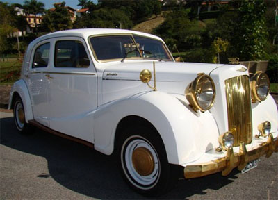

Debutantes |
Chegada da debutante
|  |
A debutante chegará de limusine. Caso seja organizada em um sitio ou clube de campo, a debutante será conduzida para a festa em um helicopitero.
Recepção aos convidados.
No dia da festa devem estar á espera dos convidados: pai, mãe, irmãos, além da aniverssáriante (pelo menos inicio),
com um vestido lindo que será trocado. Todos perfilados na entrada do local para receber os convidados e cumprimentos.
Os presentes devem ser acomadados sobre uma mesa discretamente posicionada, tendo uma recepcionista para recebe-los.
A musica será de acordo com o gostoda aniverssáriante (Mesclada com outros ritmos, devido ao público heterogêneo).
O ritual da valsa
A valsa é o ritmo que deve ser tocado no momento em que os 15 casais
(as meninas com vestido da mesma cor e os meninos de smoking) seguram uma vela acesa,
entram no salão e se movimenta, em circulos. A debutante, dançando com o pai, deve rodopiar pelo salão e
assoprar as velas acesas pelos padrinhos. O casal que tiver a vela apagada começa a dançar até que todos
estejam, finalmente, dançando.
Há quem escolha 14ª casais e a 15ª vela fica, assim, com a aniversariante.
A 2ª valsa será tocada, com o padrinho; e a 3ª com o irmão, amigo, primo ou namodo e todos
os convidados são conviddos para dança também. Após as valsas o clima muda, os jovem convidados
dançam à vontade e podem ser distribuidos adereço para animar a festa, como coroas, cetros, colares, óculos,
tiradas com luzes, pompons, entre outros acessórios.
A debutante também pode trocar de roupa nesta hora e colorcar um traje mais adequado ao momento.
Mas tudo isso muda caso a festa seja organizada em um sitio, por exemplo, com churrasco.
Nesse caso, o traje deve ser esporte-chique e não a rigor, mas a alegria será a mesma.